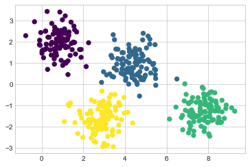
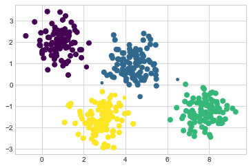
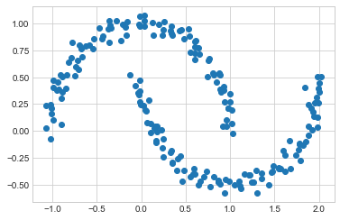
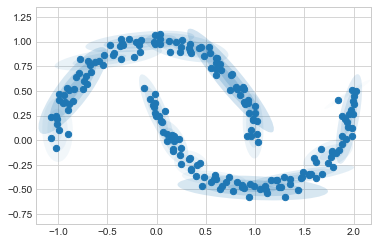
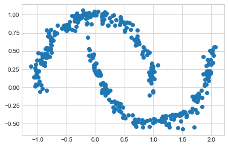
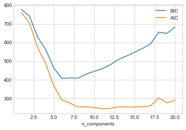
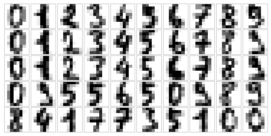
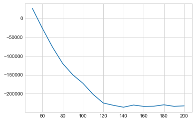

%matplotlib inline
import matplotlib.pyplot as plt
plt.style.use('seaborn-whitegrid')
import numpy as np심층 분석: 가우스 혼합 모델
이전 장에서 살펴본 k-평균 군집화 모델은 간단하고 비교적 이해하기 쉽지만 단순함은 적용 시 실질적인 문제로 이어집니다. 특히, k-평균의 비확률적 특성과 클러스터 중심으로부터의 단순한 거리를 사용하여 클러스터 구성원을 할당하는 것은 많은 실제 상황에서 성능이 저하됩니다. 이번 장에서는 k-평균 뒤에 있는 아이디어의 확장으로 볼 수 있지만 단순한 클러스터링을 넘어선 추정을 위한 강력한 도구가 될 수도 있는 가우스 혼합 모델을 살펴보겠습니다.
표준 가져오기부터 시작합니다.
가우스 혼합 동기 부여: k-평균의 약점
k-평균의 몇 가지 약점을 살펴보고 클러스터 모델을 개선할 수 있는 방법에 대해 생각해 보겠습니다. 이전 장에서 본 것처럼 간단하고 잘 구분된 데이터가 주어지면 k-수단은 적합한 클러스터링 결과를 찾습니다.
예를 들어 간단한 데이터 덩어리가 있는 경우 k-평균 알고리즘은 눈으로 볼 수 있는 것과 거의 일치하는 방식으로 해당 클러스터에 신속하게 레이블을 지정합니다(다음 그림 참조).
# Generate some data
from sklearn.datasets import make_blobs
X, y_true = make_blobs(n_samples=400, centers=4,
cluster_std=0.60, random_state=0)
X = X[:, ::-1] # flip axes for better plotting# Plot the data with k-means labels
from sklearn.cluster import KMeans
kmeans = KMeans(4, random_state=0)
labels = kmeans.fit(X).predict(X)
plt.scatter(X[:, 0], X[:, 1], c=labels, s=40, cmap='viridis');
직관적인 관점에서 볼 때 일부 포인트에 대한 클러스터링 할당이 다른 포인트보다 더 확실할 것으로 예상합니다. 예를 들어 두 중간 클러스터 사이에 아주 약간 겹치는 것처럼 보이므로 두 클러스터 사이의 포인트 클러스터 할당에 대해 완전한 확신을 갖지 못합니다. 불행하게도 k-평균 모델에는 클러스터 할당의 확률이나 불확실성에 대한 본질적인 측정값이 없습니다(이 불확실성을 추정하기 위해 부트스트랩 접근 방식을 사용하는 것이 가능할 수도 있지만). 이를 위해서는 모델을 일반화하는 것에 대해 생각해야 합니다.
k-평균 모델에 대해 생각하는 한 가지 방법은 각 클러스터의 중심에 원(또는 더 높은 차원에서는 초구)을 배치하고 반경은 클러스터에서 가장 먼 지점으로 정의된다는 것입니다. 이 반경은 훈련 세트 내의 클러스터 할당에 대한 하드 컷오프 역할을 합니다. 이 원 밖의 모든 지점은 클러스터의 구성원으로 간주되지 않습니다. 다음 함수를 사용하여 이 클러스터 모델을 시각화합니다(다음 그림 참조).
from sklearn.cluster import KMeans
from scipy.spatial.distance import cdist
def plot_kmeans(kmeans, X, n_clusters=4, rseed=0, ax=None):
labels = kmeans.fit_predict(X)
# plot the input data
ax = ax or plt.gca()
ax.axis('equal')
ax.scatter(X[:, 0], X[:, 1], c=labels, s=40, cmap='viridis', zorder=2)
# plot the representation of the KMeans model
centers = kmeans.cluster_centers_
radii = [cdist(X[labels == i], [center]).max()
for i, center in enumerate(centers)]
for c, r in zip(centers, radii):
ax.add_patch(plt.Circle(c, r, ec='black', fc='lightgray',
lw=3, alpha=0.5, zorder=1))kmeans = KMeans(n_clusters=4, random_state=0)
plot_kmeans(kmeans, X)
k-평균에 대한 중요한 관찰은 이러한 클러스터 모델이 원형이어야 합니다: k-평균에는 직사각형 또는 타원형 클러스터를 설명하는 기본 제공 방법이 없다는 것입니다. 예를 들어 동일한 데이터를 가져와 변환하면 다음 그림에서 볼 수 있듯이 클러스터 할당이 혼란스러워집니다.
rng = np.random.RandomState(13)
X_stretched = np.dot(X, rng.randn(2, 2))
kmeans = KMeans(n_clusters=4, random_state=0)
plot_kmeans(kmeans, X_stretched)
육안으로 우리는 이러한 변환된 클러스터가 비원형이므로 원형 클러스터가 적합하지 않음을 인식합니다. 그럼에도 불구하고 k-평균은 이를 설명할 만큼 유연하지 않으며 데이터를 4개의 원형 클러스터에 강제로 맞추려고 합니다. 이로 인해 결과 원이 겹치는 클러스터 할당이 혼합됩니다. 특히 이 플롯의 오른쪽 하단을 참조하세요. PCA를 사용하여 데이터를 전처리하여 이 특정 상황을 해결하는 것을 상상할 수도 있지만(심층: 주요 구성 요소 분석 참조) 실제로 이러한 전역 작업이 개별 그룹을 순환시킬 것이라는 보장은 없습니다.
k의 두 가지 단점(클러스터 모양의 유연성 부족 및 확률적 클러스터 할당 부족)은 많은 데이터 세트(특히 저차원 데이터 세트)에 대해 원하는 만큼 성능을 발휘하지 못할 수 있음을 의미합니다.
k-평균 모델을 일반화하여 이러한 약점을 해결하는 것을 상상합니다. 예를 들어 가장 가까운 것만 집중하는 대신 각 점의 거리를 모든 군집 중심과 비교하여 군집 할당의 불확실성을 측정합니다. 비원형 클러스터를 설명하기 위해 클러스터 경계를 원이 아닌 타원으로 허용하는 것을 상상할 수도 있습니다. 이는 서로 다른 유형의 클러스터링 모델인 가우스 혼합 모델의 두 가지 필수 구성 요소임이 밝혀졌습니다.
E–M 일반화: 가우스 혼합 모델
GMM(가우스 혼합 모델)은 모든 입력 데이터 세트를 가장 잘 모델링하는 다차원 가우스 확률 분포의 혼합을 찾으려고 시도합니다. 가장 간단한 경우 GMM은 k-평균과 동일한 방식으로 클러스터를 찾는 데 사용될 수 있습니다(다음 그림 참조).
from sklearn.mixture import GaussianMixture
gmm = GaussianMixture(n_components=4).fit(X)
labels = gmm.predict(X)
plt.scatter(X[:, 0], X[:, 1], c=labels, s=40, cmap='viridis');
그러나 GMM에는 내부적으로 확률 모델이 포함되어 있기 때문에 확률 클러스터 할당을 찾는 것도 가능합니다. Scikit-Learn에서는 ‘predict_proba’ 방법을 사용하여 이를 수행합니다. 이는 임의의 포인트가 주어진 클러스터에 속할 확률을 측정하는 [n_samples, n_clusters] 크기의 행렬을 반환합니다.
probs = gmm.predict_proba(X)
print(probs[:5].round(3))[[0. 0.531 0.469 0. ]
[0. 0. 0. 1. ]
[0. 0. 0. 1. ]
[0. 1. 0. 0. ]
[0. 0. 0. 1. ]]예를 들어 각 점의 크기를 예측의 확실성에 비례하도록 만들어 이러한 불확실성을 시각화합니다. 다음 그림을 보면 클러스터 할당의 불확실성을 반영하는 것이 바로 클러스터 사이의 경계에 있는 지점이라는 것을 확인합니다.
size = 50 * probs.max(1) ** 2 # square emphasizes differences
plt.scatter(X[:, 0], X[:, 1], c=labels, cmap='viridis', s=size);
내부적으로 가우스 혼합 모델은 k-평균과 매우 유사합니다. 즉, 기대값 최대화 접근 방식을 사용하여 질적으로 다음을 수행합니다.
위치와 모양에 대한 시작 추측을 선택합니다.
수렴될 때까지 반복합니다.
E-단계: 각 포인트에 대해 각 클러스터에 속할 확률을 인코딩하는 가중치를 찾습니다.
M-단계: 각 클러스터에 대해 가중치를 활용하여 모든 데이터 포인트를 기반으로 위치, 정규화 및 모양을 업데이트합니다.
그 결과 각 클러스터는 가장자리가 딱딱한 구가 아니라 부드러운 가우스 모델과 연관됩니다. k-기대값 최대화 접근 방식과 마찬가지로 이 알고리즘은 때때로 전역적으로 최적의 솔루션을 놓칠 수 있으므로 실제로는 여러 무작위 초기화가 사용됩니다.
GMM 출력을 기반으로 타원을 그려서 GMM 클러스터의 위치와 모양을 시각화하는 데 도움이 되는 함수를 만들어 보겠습니다.
from matplotlib.patches import Ellipse
def draw_ellipse(position, covariance, ax=None, **kwargs):
"""Draw an ellipse with a given position and covariance"""
ax = ax or plt.gca()
# Convert covariance to principal axes
if covariance.shape == (2, 2):
U, s, Vt = np.linalg.svd(covariance)
angle = np.degrees(np.arctan2(U[1, 0], U[0, 0]))
width, height = 2 * np.sqrt(s)
else:
angle = 0
width, height = 2 * np.sqrt(covariance)
# Draw the ellipse
for nsig in range(1, 4):
ax.add_patch(Ellipse(position, nsig * width, nsig * height,
angle, **kwargs))
def plot_gmm(gmm, X, label=True, ax=None):
ax = ax or plt.gca()
labels = gmm.fit(X).predict(X)
if label:
ax.scatter(X[:, 0], X[:, 1], c=labels, s=40, cmap='viridis', zorder=2)
else:
ax.scatter(X[:, 0], X[:, 1], s=40, zorder=2)
ax.axis('equal')
w_factor = 0.2 / gmm.weights_.max()
for pos, covar, w in zip(gmm.means_, gmm.covariances_, gmm.weights_):
draw_ellipse(pos, covar, alpha=w * w_factor)이를 통해 4개 구성 요소 GMM이 초기 데이터에 대해 제공하는 내용을 살펴볼 수 있습니다(다음 그림 참조).
gmm = GaussianMixture(n_components=4, random_state=42)
plot_gmm(gmm, X)
마찬가지로 확장된 데이터 세트에 맞게 GMM 접근 방식을 사용합니다. 전체 공분산을 허용하면 모델은 다음 그림에서 볼 수 있듯이 매우 길고 뻗어 있는 클러스터에도 적합합니다.
gmm = GaussianMixture(n_components=4, covariance_type='full', random_state=42)
plot_gmm(gmm, X_stretched)
이는 GMM이 이전에 직면했던 k-평균과 관련된 두 가지 주요 실제 문제를 해결한다는 것을 분명히 합니다.
공분산 유형 선택
앞선 피팅의 세부 사항을 살펴보면 각각 내에서 ‘covariance_type’ 옵션이 다르게 설정되어 있는 것을 확인합니다. 이 하이퍼파라미터는 각 클러스터 모양의 자유도를 제어합니다. 특정 문제에 대해 이를 신중하게 설정하는 것이 중요합니다. 기본값은 covariance_type="diag"입니다. 이는 각 차원에 따른 클러스터의 크기를 독립적으로 설정할 수 있으며 결과 타원이 축과 정렬되도록 제한된다는 의미입니다. 약간 더 간단하고 빠른 모델은 모든 차원이 동일하도록 클러스터의 모양을 제한하는 covariance_type="sphere"입니다. 결과 클러스터링은 k-평균과 유사한 특성을 갖지만 완전히 동일하지는 않습니다. 더 복잡하고 계산 비용이 많이 드는 모델(특히 차원 수가 증가함에 따라)은 covariance_type="full"을 사용하는 것입니다. 이를 통해 각 클러스터를 임의 방향의 타원으로 모델링합니다.
다음 그림에서는 단일 클러스터에 대한 이러한 세 가지 선택 사항을 시각적으로 살펴볼 수 있습니다.

밀도 추정으로서의 가우스 혼합 모델
GMM은 종종 클러스터링 알고리즘으로 분류되지만 는 밀도 추정을 위한 알고리즘입니다. 즉, 일부 데이터에 대한 GMM 적합의 결과는 기술적으로 클러스터링 모델이 아니라 데이터 분포를 설명하는 생성 확률 모델입니다.
예를 들어 심층: K-평균 군집화에 소개된 Scikit-Learn의 ‘make_moons’ 함수에서 생성된 일부 데이터를 고려해 보세요(다음 그림 참조).
from sklearn.datasets import make_moons
Xmoon, ymoon = make_moons(200, noise=.05, random_state=0)
plt.scatter(Xmoon[:, 0], Xmoon[:, 1]);
이를 클러스터링 모델로 간주되는 2개 구성 요소 GMM에 맞추려고 하면 결과가 특별히 유용하지 않습니다(다음 그림 참조).
gmm2 = GaussianMixture(n_components=2, covariance_type='full', random_state=0)
plot_gmm(gmm2, Xmoon)
그러나 대신 더 많은 구성 요소를 사용하고 클러스터 레이블을 무시하면 입력 데이터에 훨씬 더 가까운 피팅을 찾습니다(다음 그림 참조).
gmm16 = GaussianMixture(n_components=16, covariance_type='full', random_state=0)
plot_gmm(gmm16, Xmoon, label=False)
여기서 16개 가우스 구성 요소의 혼합은 분리된 데이터 클러스터를 찾는 것이 아니라 입력 데이터의 전체 분포를 모델링하는 역할을 합니다. 이는 분포의 생성 모델입니다. 즉, GMM은 입력과 유사하게 분포된 새로운 무작위 데이터를 생성하는 방법을 제공합니다. 예를 들어 원본 데이터에 맞게 16개 성분 GMM에서 추출한 400개의 새로운 포인트가 있습니다(다음 그림 참조).
Xnew, ynew = gmm16.sample(400)
plt.scatter(Xnew[:, 0], Xnew[:, 1]);
GMM은 임의의 다차원 데이터 분포를 모델링하는 유연한 수단으로 편리합니다.
구성요소는 몇 개입니까?
GMM이 생성 모델이라는 사실은 주어진 데이터 세트에 대한 최적의 구성 요소 수를 결정하는 자연스러운 수단을 제공합니다. 생성 모델은 본질적으로 데이터 세트에 대한 확률 분포이므로 과적합을 방지하기 위해 교차 검증을 사용하여 모델 아래 데이터의 가능성을 간단히 평가합니다. 과적합을 수정하는 또 다른 방법은 AIC(Akaike 정보 기준) 또는 베이지안 정보 기준(BIC)과 같은 일부 분석 기준을 사용하여 모델 가능성을 조정하는 것입니다. Scikit-Learn의 GaussianMixture 추정기에는 실제로 이 두 가지를 모두 계산하는 내장 메서드가 포함되어 있으므로 이 접근 방식을 사용하여 작동하는 것은 매우 쉽습니다.
달 데이터 세트의 AIC 및 BIC와 GMM 구성 요소 수를 살펴보겠습니다(다음 그림 참조).
n_components = np.arange(1, 21)
models = [GaussianMixture(n, covariance_type='full', random_state=0).fit(Xmoon)
for n in n_components]
plt.plot(n_components, [m.bic(Xmoon) for m in models], label='BIC')
plt.plot(n_components, [m.aic(Xmoon) for m in models], label='AIC')
plt.legend(loc='best')
plt.xlabel('n_components');
최적의 클러스터 수는 사용하려는 근사값에 따라 AIC 또는 BIC를 최소화하는 값입니다. AIC는 이전에 우리가 선택한 16개의 구성 요소가 너무 많았을 것이라고 말합니다. 약 8~12개의 구성 요소가 더 나은 선택이었을 것입니다. 이러한 종류의 문제에서 일반적으로 발생하는 것처럼 BIC는 더 간단한 모델을 권장합니다.
중요한 점에 주목하십시오. 이러한 구성 요소 수 선택은 GMM이 클러스터링 알고리즘으로서 얼마나 잘 작동하는지가 아니라 밀도 추정기로서 얼마나 잘 작동하는지 측정합니다. GMM을 주로 밀도 추정기로 생각하고 간단한 데이터 세트 내에서 보증되는 경우에만 클러스터링에 사용하는 것이 좋습니다.
예: 새 데이터 생성을 위한 GMM
우리는 입력 데이터에 의해 정의된 분포에서 새로운 샘플을 생성하기 위해 GMM을 생성 모델로 사용하는 간단한 예를 보았습니다. 여기서는 이 아이디어를 실행하고 이전에 사용한 표준 숫자 코퍼스에서 새로운 손으로 쓴 숫자를 생성합니다.
먼저 Scikit-Learn의 데이터 도구를 사용하여 숫자 데이터를 로드해 보겠습니다.
from sklearn.datasets import load_digits
digits = load_digits()
digits.data.shape(1797, 64)다음으로, 우리가 보고 있는 내용을 정확히 기억하기 위해 이들 중 처음 50개를 구성해 보겠습니다(다음 그림 참조).
def plot_digits(data):
fig, ax = plt.subplots(5, 10, figsize=(8, 4),
subplot_kw=dict(xticks=[], yticks=[]))
fig.subplots_adjust(hspace=0.05, wspace=0.05)
for i, axi in enumerate(ax.flat):
im = axi.imshow(data[i].reshape(8, 8), cmap='binary')
im.set_clim(0, 16)
plot_digits(digits.data)
우리는 64개 차원에 거의 1,800개의 숫자를 가지고 있으며, 이들 위에 GMM을 구축하여 더 많은 숫자를 생성합니다. GMM은 이러한 고차원 공간에서 수렴하는 데 어려움을 겪을 수 있으므로 데이터에 대한 가역적 차원 축소 알고리즘부터 시작하겠습니다. 여기서는 투영된 데이터의 분산을 99% 보존하도록 요청하는 간단한 PCA를 사용합니다.
from sklearn.decomposition import PCA
pca = PCA(0.99, whiten=True)
data = pca.fit_transform(digits.data)
data.shape(1797, 41)결과는 정보 손실이 거의 없이 거의 1/3로 줄어든 41차원입니다. 이 예상 데이터가 주어지면 AIC를 사용하여 사용해야 하는 GMM 구성 요소 수에 대한 게이지를 얻습니다(다음 그림 참조).
n_components = np.arange(50, 210, 10)
models = [GaussianMixture(n, covariance_type='full', random_state=0)
for n in n_components]
aics = [model.fit(data).aic(data) for model in models]
plt.plot(n_components, aics);
약 140개의 구성 요소가 AIC를 최소화하는 것으로 보입니다. 우리는 이 모델을 사용할 것입니다. 이를 데이터에 빠르게 맞추고 수렴되었는지 확인하겠습니다.
gmm = GaussianMixture(140, covariance_type='full', random_state=0)
gmm.fit(data)
print(gmm.converged_)True이제 GMM을 생성 모델로 사용하여 이 41차원 투영 공간 내에서 100개의 새로운 점 샘플을 그릴 수 있습니다.
data_new, label_new = gmm.sample(100)
data_new.shape(100, 41)마지막으로 PCA 개체의 역변환을 사용하여 새 숫자를 구성합니다(다음 그림 참조).
digits_new = pca.inverse_transform(data_new)
plot_digits(digits_new)
대부분의 결과는 데이터 세트의 그럴듯한 숫자처럼 보입니다!
여기서 수행한 작업을 고려하십시오. 손으로 쓴 숫자 샘플링을 통해 데이터에서 완전히 새로운 숫자 샘플을 생성할 수 있는 방식으로 해당 데이터의 분포를 모델링했습니다. 이는 “손으로 쓴 숫자”로 원래 데이터 세트에 개별적으로 표시되지 않고 혼합 모델에서 모델링한 대로 입력 데이터의 일반적인 특징을 캡처합니다. 이러한 숫자 생성 모델은 다음 장에서 살펴보겠지만 베이지안 생성 분류기의 구성 요소로서 매우 유용합니다.